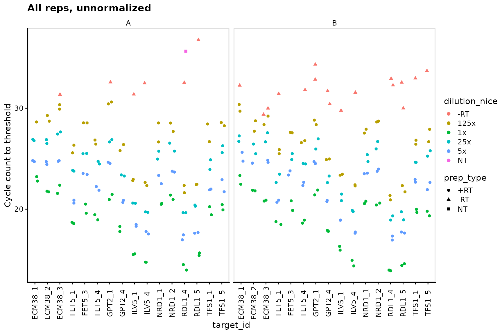
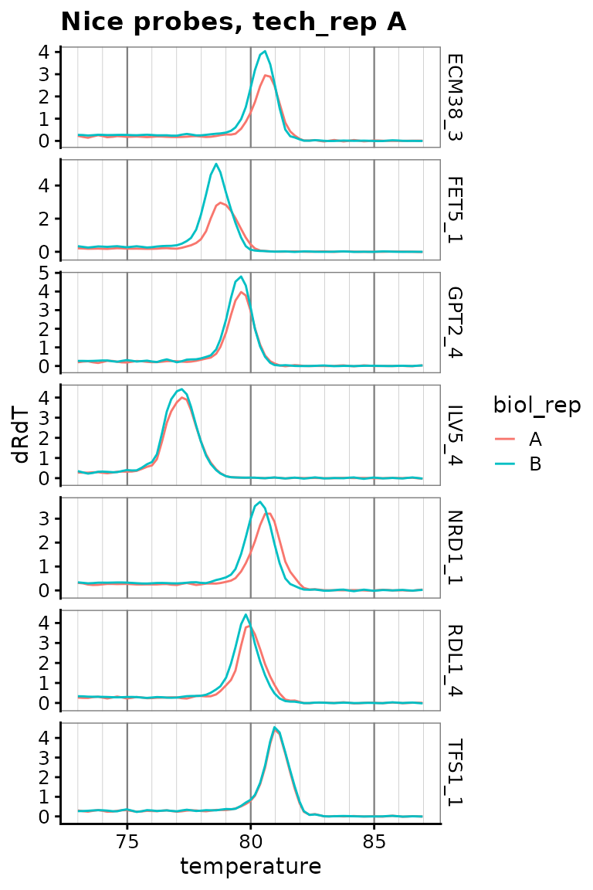

Primers and probes calibration vignette
Edward Wallace
Feb 2019
Source:vignettes/calibration_vignette.Rmd
calibration_vignette.RmdSummary: calibrating primer sets from a real experimental test
This vignette shows how to use tidyqpcr functions to calibrate qPCR probes.
This is real qPCR data by Edward Wallace in Feb 2019, testing new RT-qPCR primer sets against S. cerevisiae genes. We took exponential-phase total RNA previously extracted by Jamie Auxillos.
We tested 2-3 primer sets each for 7 genes:
- ECM38/ YLR299W (3 primer sets)
- FET5 / YFL041W (3 primer sets)
- GPT2/YKR067W
- ILV5/YLR355C
- NRD1/YNL251C (ordered 3rd primer set not tested today)
- RDL1/YOR285W
- TFS1/YLR178C
We started with two biological replicate RNA samples, treated with DNase and then split for a test sample with reverse transcriptase (RT) and negative control without reverse transcriptase (-RT). We also took a no template (NT) negative control. For each RT reaction we do serial 5x dilutions down to 125x to form a quantitative calibration curve.
The data were measured on a Roche LC480 instrument in a single 384-well plate. Quantification was performed in the Roche LightCycler software prior to using this program.
Set up experiment
Label and plan plates
# Names of target genes
gene_name_levels <- c("ECM38", "FET5", "GPT2", "ILV5", "NRD1", "RDL1", "TFS1")
# ORF ids of target genes
target_levels <- c("YLR299W", "YFL041W", "YKR067W", "YLR355C",
"YNL251C", "YOR285W", "YLR178C")
# Repeats of gene names to account for testing multiple primer sets
gene_name_values <- c(rep(gene_name_levels[1:2], each = 3),
rep(gene_name_levels[3:7], each = 2))
# id numbers of multiple probesets (reflecting IDs as ordered)
target_id_levels <- paste(gene_name_values,
c(1, 2, 3, 1, 3, 4, 1, 4, 1, 4, 1, 2, 4, 5, 1, 5),
sep = "_"
)
rowkey <- tibble(
well_row = LETTERS[1:16],
gene_name = gene_name_values,
target_id = factor(target_id_levels, levels = target_id_levels)
)
plate1plan <-
label_plate_rowcol(
create_blank_plate(),
rowkey,
create_colkey_4diln_2ctrl_in_24()
) %>%
mutate(sample_id = paste(biol_rep, dilution_nice, sep = "_"))Spot-check the plate plan
Checks that for selected techrep/probe/dilution combinations, the plate contains the right number of replicates.
plate1plan %>%
filter(tech_rep == "1",
target_id == target_id_levels[1],
dilution_nice == "1x")## # A tibble: 2 x 11
## well well_row well_col dilution dilution_nice prep_type biol_rep tech_rep
## <chr> <fct> <fct> <dbl> <chr> <fct> <fct> <fct>
## 1 A1 A 1 1 1x +RT A 1
## 2 A13 A 13 1 1x +RT B 1
## # … with 3 more variables: gene_name <chr>, target_id <fct>, sample_id <chr>
plate1plan %>%
filter(tech_rep == "2",
target_id == target_id_levels[4])## # A tibble: 12 x 11
## well well_row well_col dilution dilution_nice prep_type biol_rep tech_rep
## <chr> <fct> <fct> <dbl> <chr> <fct> <fct> <fct>
## 1 D7 D 7 1 1x +RT A 2
## 2 D8 D 8 0.2 5x +RT A 2
## 3 D9 D 9 0.04 25x +RT A 2
## 4 D10 D 10 0.008 125x +RT A 2
## 5 D11 D 11 1 -RT -RT A 2
## 6 D12 D 12 1 NT NT A 2
## 7 D19 D 19 1 1x +RT B 2
## 8 D20 D 20 0.2 5x +RT B 2
## 9 D21 D 21 0.04 25x +RT B 2
## 10 D22 D 22 0.008 125x +RT B 2
## 11 D23 D 23 1 -RT -RT B 2
## 12 D24 D 24 1 NT NT B 2
## # … with 3 more variables: gene_name <chr>, target_id <fct>, sample_id <chr>Display the plate plan
This can be printed out to facilitate loading the plate correctly.
display_plate(plate1plan)Analyze Cq (quantification cycle count) data
Load and summarize data
plates <- read_lightcycler_1colour_cq(
"../inst/extdata/Edward_qPCR_Nrd1_calibration_2019-02-02_Ct.txt"
) %>%
right_join(plate1plan)
plates## # A tibble: 384 x 18
## include color well sample_info cq concentration standard status well_row
## <lgl> <int> <chr> <chr> <dbl> <dbl> <int> <lgl> <fct>
## 1 TRUE 255 A1 Sample 1 22.8 NA 0 NA A
## 2 TRUE 255 A2 Sample 2 24.7 NA 0 NA A
## 3 TRUE 255 A3 Sample 3 26.8 NA 0 NA A
## 4 TRUE 255 A4 Sample 4 28.6 NA 0 NA A
## 5 TRUE 65280 A5 Sample 5 NA NA 0 NA A
## 6 TRUE 65280 A6 Sample 6 NA NA 0 NA A
## 7 TRUE 255 A7 Sample 7 23.2 NA 0 NA A
## 8 TRUE 255 A8 Sample 8 24.8 NA 0 NA A
## 9 TRUE 255 A9 Sample 9 26.9 NA 0 NA A
## 10 TRUE 65280 A10 Sample 10 NA NA 0 NA A
## # … with 374 more rows, and 9 more variables: well_col <fct>, dilution <dbl>,
## # dilution_nice <chr>, prep_type <fct>, biol_rep <fct>, tech_rep <fct>,
## # gene_name <chr>, target_id <fct>, sample_id <chr>
summary(plates)## include color well sample_info
## Mode:logical Min. : 255 Length:384 Length:384
## TRUE:384 1st Qu.: 255 Class :character Class :character
## Median : 255 Mode :character Mode :character
## Mean :18035
## 3rd Qu.:65280
## Max. :65280
##
## cq concentration standard status well_row
## Min. :13.89 Min. : NA Min. :0 Mode:logical A : 24
## 1st Qu.:20.55 1st Qu.: NA 1st Qu.:0 NA's:384 B : 24
## Median :23.44 Median : NA Median :0 C : 24
## Mean :23.63 Mean :NaN Mean :0 D : 24
## 3rd Qu.:26.68 3rd Qu.: NA 3rd Qu.:0 E : 24
## Max. :36.77 Max. : NA Max. :0 F : 24
## NA's :105 NA's :384 (Other):240
## well_col dilution dilution_nice prep_type biol_rep tech_rep
## 1 : 16 Min. :0.0080 Length:384 +RT:256 A:192 1:192
## 2 : 16 1st Qu.:0.0400 Class :character -RT: 64 B:192 2:192
## 3 : 16 Median :0.6000 Mode :character NT : 64
## 4 : 16 Mean :0.5413
## 5 : 16 3rd Qu.:1.0000
## 6 : 16 Max. :1.0000
## (Other):288
## gene_name target_id sample_id
## Length:384 ECM38_1: 24 Length:384
## Class :character ECM38_2: 24 Class :character
## Mode :character ECM38_3: 24 Mode :character
## FET5_1 : 24
## FET5_3 : 24
## FET5_4 : 24
## (Other):240Plot unnormalized data shows that -RT and NT controls are low
We detect no signal in NT (no template) negative control, and very weak signal in -RT (no reverse transcriptase) negative controls.
ggplot(data = plates) +
geom_point(aes(x = target_id,
y = cq,
colour = dilution_nice,
shape = prep_type),
position = position_jitter(width = 0.2, height = 0)
) +
labs(
y = "Cycle count to threshold",
title = "All reps, unnormalized"
) +
facet_wrap(~biol_rep) +
panel_border() +
theme(axis.text.x = element_text(angle = 90, vjust = 0.5))
Dilution series is linear for all probes
Visual display of linearity of cq with log(dilution).
ggplot(data = filter(plates, prep_type == "+RT"), aes(x = dilution, y = cq)) +
geom_point() +
stat_smooth(
formula = y ~ x, method = "lm", se = FALSE,
aes(colour = "fit", linetype = "fit")
) +
stat_smooth(
formula = y ~ 1 + offset(-x * log(10) / log(2)), method = "lm", se = FALSE,
aes(colour = "theory", linetype = "theory")
) +
scale_x_log10(breaks = 10 ^ - (0:3)) +
scale_y_continuous(breaks = seq(0, 30, 2)) +
labs(
y = "Cycle count to threshold",
title = "All reps, unnormalized",
colour = "Dilution", linetype = "Dilution"
) +
facet_grid(target_id ~ biol_rep, scales = "free_y") +
theme(axis.text.x = element_text(angle = 90, vjust = 0.5))
Calculate primer efficiencies for all probes
Use regression to estimate linearity of cq with log(dilution), including the slope or efficiency.
calculate_efficiency_bytargetid(plates)## # A tibble: 16 x 4
## target_id efficiency efficiency.sd r.squared
## <fct> <dbl> <dbl> <dbl>
## 1 ECM38_1 0.923 0.0480 0.970
## 2 ECM38_2 0.958 0.0429 0.975
## 3 ECM38_3 1.15 0.0524 0.974
## 4 FET5_1 1.05 0.0317 0.988
## 5 FET5_3 1.09 0.0507 0.973
## 6 FET5_4 1.09 0.0413 0.982
## 7 GPT2_1 1.14 0.0601 0.965
## 8 GPT2_4 1.08 0.0345 0.987
## 9 ILV5_1 1.04 0.0222 0.994
## 10 ILV5_4 1.09 0.0239 0.994
## 11 NRD1_1 0.998 0.0498 0.969
## 12 NRD1_2 1.08 0.0423 0.981
## 13 RDL1_4 1.06 0.0386 0.983
## 14 RDL1_5 1.03 0.0327 0.987
## 15 TFS1_1 1.03 0.0551 0.964
## 16 TFS1_5 1.18 0.0544 0.973Dilution series for nice probes only shows linearity clearly
target_id_levels_nice <- c("ECM38_3", "FET5_1", "GPT2_4", "ILV5_4",
"NRD1_1", "RDL1_4", "TFS1_1")
ggplot(
data = filter(plates,
prep_type == "+RT",
target_id %in% target_id_levels_nice),
aes(x = dilution, y = cq)
) +
geom_point() +
stat_smooth(
formula = y ~ x, method = "lm", se = FALSE,
aes(colour = "fit", linetype = "fit")
) +
stat_smooth(
formula = y ~ 1 + offset(-x * log(10) / log(2)),
method = "lm",
se = FALSE,
aes(colour = "theory", linetype = "theory")
) +
scale_x_log10(breaks = 10 ^ - (0:3)) +
scale_y_continuous(breaks = seq(0, 30, 2)) +
labs(
y = "Cycle count to threshold",
title = "All reps, unnormalized",
colour = "Dilution", linetype = "Dilution"
) +
facet_grid(target_id ~ biol_rep, scales = "free_y") +
theme(axis.text.x = element_text(angle = 90, vjust = 0.5))
Analyze amplification and melt curve data
Load raw data for amplification and melt curves.
plate1curve <- read_lightcycler_1colour_raw(
"../inst/extdata/Edward_qPCR_Nrd1_calibration_2019-02-02.txt"
) %>%
debaseline() %>%
left_join(plate1plan)
# amplification curve is program 2
platesamp <- plate1curve %>%
filter(program_no == 2)
# melt curve is program 3 or 4, depending on cycler setting
platesmelt <- plate1curve %>%
filter(program_no == 3) %>%
calculate_drdt_plate() %>%
filter(temperature >= 61)Plot de-baseline’d raw data for single well
ggplot(
data = platesamp %>% filter(well == "A1"),
aes(x = cycle, y = fluor_signal)
) +
geom_line() +
scale_y_continuous(expand = c(0.01, 0.01))
Plot all amplification curves
Broken up by technical replicate here, to avoid overplotting.
ggplot(
data = platesamp %>%
filter(tech_rep == "1"),
aes(x = cycle,
y = fluor_signal,
colour = factor(dilution),
linetype = prep_type)
) +
facet_grid(target_id ~ biol_rep, scales = "free_y") +
scale_linetype_manual(values = c("+RT" = "solid",
"-RT" = "dashed",
"NT" = "dotted")) +
geom_line() +
scale_x_continuous(breaks = seq(60, 100, 10),
minor_breaks = seq(60, 100, 5)) +
labs(title = "All Amp Curves, tech_rep A")
ggplot(
data = platesamp %>%
filter(tech_rep == "2"),
aes(x = cycle,
y = fluor_signal,
colour = factor(dilution),
linetype = prep_type)
) +
facet_grid(target_id ~ biol_rep, scales = "free_y") +
scale_linetype_manual(values = c("+RT" = "solid",
"-RT" = "dashed",
"NT" = "dotted")) +
geom_line() +
scale_x_continuous(breaks = seq(60, 100, 10),
minor_breaks = seq(60, 100, 5)) +
labs(title = "All Amp Curves, tech_rep B")
Plot melt curve for single well
Plot all melt curves
Again broken up by technical replicate.
ggplot(
data = platesmelt %>%
filter(tech_rep == "1"),
aes(x = temperature,
y = dRdT,
colour = factor(dilution),
linetype = prep_type)
) +
facet_grid(target_id ~ biol_rep, scales = "free_y") +
scale_linetype_manual(values = c("+RT" = "solid",
"-RT" = "dashed",
"NT" = "dotted")) +
geom_line() +
scale_x_continuous(breaks = seq(60, 100, 10),
minor_breaks = seq(60, 100, 5)) +
labs(title = "All Melt Curves, tech_rep A")
ggplot(
data = platesmelt %>%
filter(tech_rep == "2"),
aes(x = temperature,
y = dRdT,
colour = factor(dilution),
linetype = prep_type)
) +
facet_grid(target_id ~ biol_rep, scales = "free_y") +
scale_linetype_manual(values = c("+RT" = "solid",
"-RT" = "dashed",
"NT" = "dotted")) +
geom_line() +
scale_x_continuous(breaks = seq(60, 100, 10),
minor_breaks = seq(60, 100, 5)) +
labs(title = "All Melt Curves, tech_rep B")
Plot zoomed melt curves
ggplot(
data = platesmelt %>%
filter(tech_rep == "1", prep_type == "+RT"),
aes(x = temperature, y = dRdT, colour = factor(dilution))
) +
facet_grid(target_id ~ biol_rep, scales = "free_y") +
geom_line() +
scale_x_continuous(
breaks = seq(60, 100, 5),
minor_breaks = seq(60, 100, 1),
limits = c(73, 87)
) +
labs(title = "Melt curves, zoomed, tech_rep A") +
theme(
panel.grid.major.x = element_line(colour = "grey50", size = 0.4),
panel.grid.minor.x = element_line(colour = "grey70", size = 0.1)
)
ggplot(
data = platesmelt %>%
filter(tech_rep == "2", prep_type == "+RT"),
aes(x = temperature, y = dRdT, colour = factor(dilution))
) +
facet_grid(target_id ~ biol_rep, scales = "free_y") +
geom_line() +
scale_x_continuous(
breaks = seq(60, 100, 5),
minor_breaks = seq(60, 100, 1),
limits = c(73, 87)
) +
labs(title = "Melt curves, zoomed, tech_rep B") +
theme(
panel.grid.major.x = element_line(colour = "grey50", size = 0.4),
panel.grid.minor.x = element_line(colour = "grey70", size = 0.1)
)Plot only zoomed melt curves for nice probes
target_id_levels_nice <- c("ECM38_3", "FET5_1", "GPT2_4", "ILV5_4",
"NRD1_1", "RDL1_4", "TFS1_1")
ggplot(
data = platesmelt %>%
filter(
tech_rep == "1",
prep_type == "+RT",
dilution_nice == "1x",
target_id %in% target_id_levels_nice
),
aes(x = temperature, y = dRdT, colour = biol_rep)
) +
facet_grid(target_id ~ ., scales = "free_y") +
geom_line() +
scale_x_continuous(
breaks = seq(60, 100, 5),
minor_breaks = seq(60, 100, 1),
limits = c(73, 87)
) +
labs(title = "Nice probes, tech_rep A") +
theme(
panel.grid.major.x = element_line(colour = "grey50", size = 0.4),
panel.grid.minor.x = element_line(colour = "grey70", size = 0.1)
)
Conclude acceptable primer sets
These probes have sensible standard curves, amplification curves, melt curves. In tie-breakers we pick the more highly detected probe.
- ECM38 set 3
- FET5 set 1 or 4
- GPT2 set 4
- ILV5 set 4
- NRD1 set 1 or 2
- RDL1 set 4
- TFS1 set 1